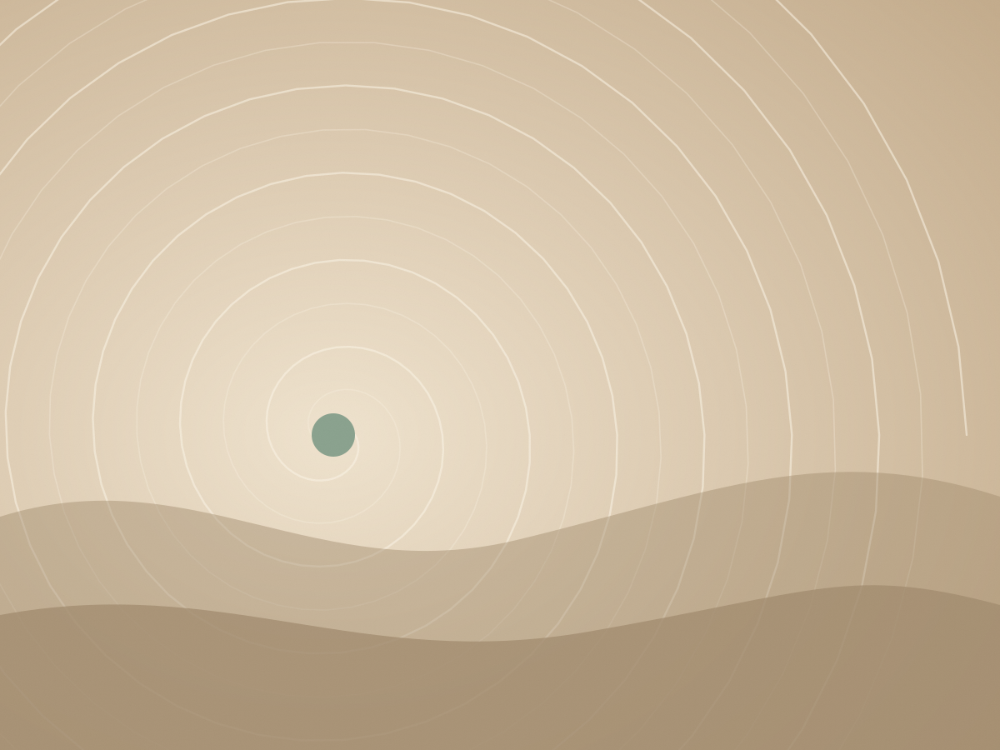
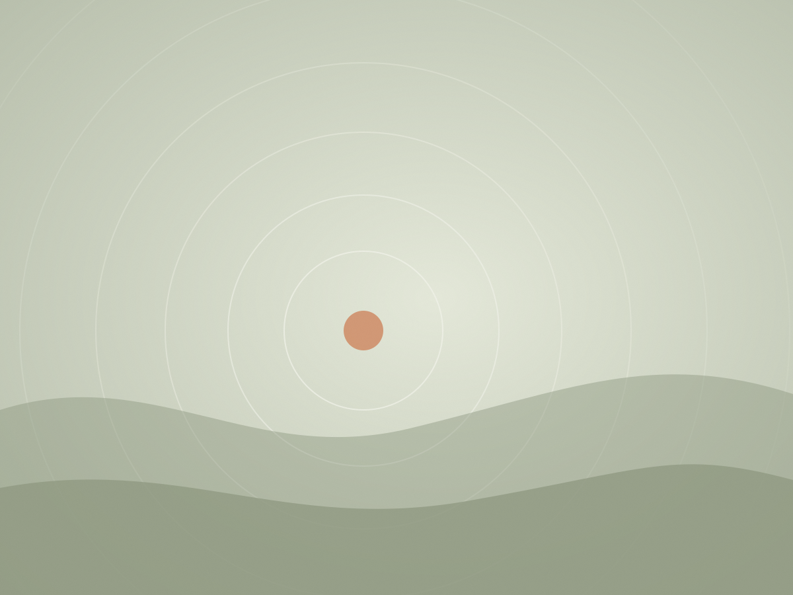
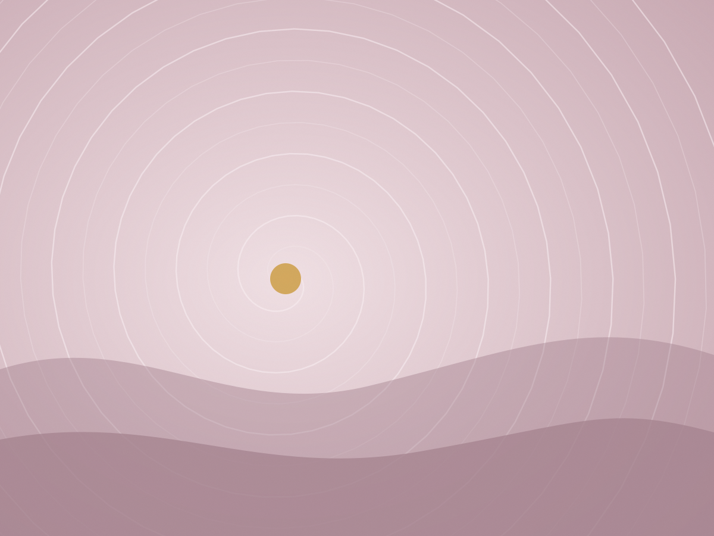
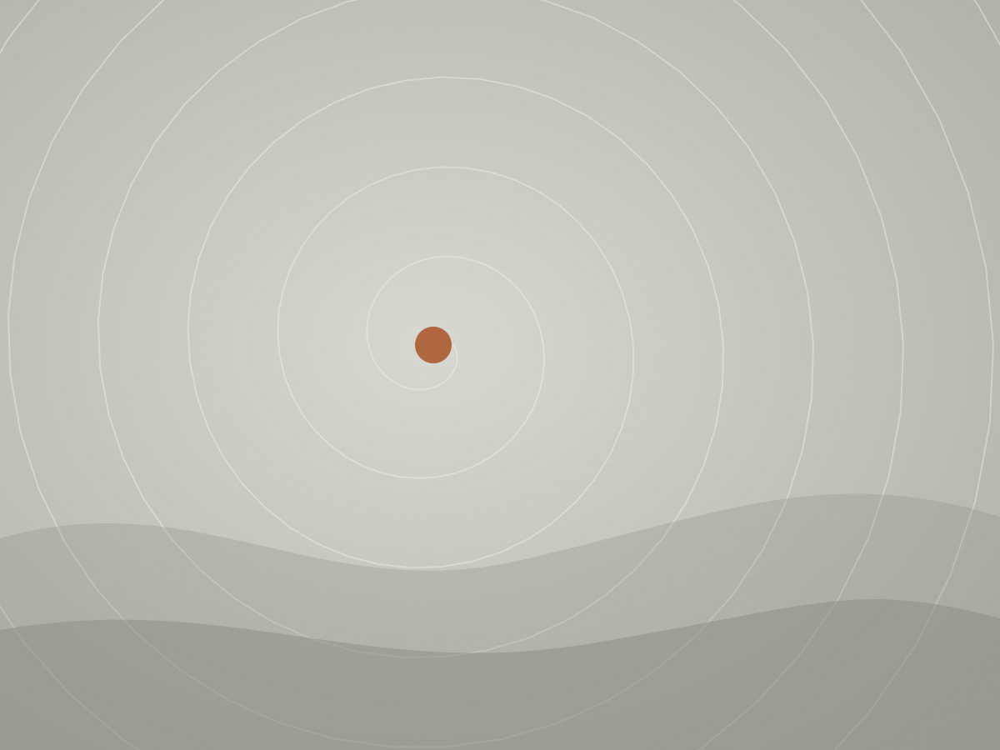
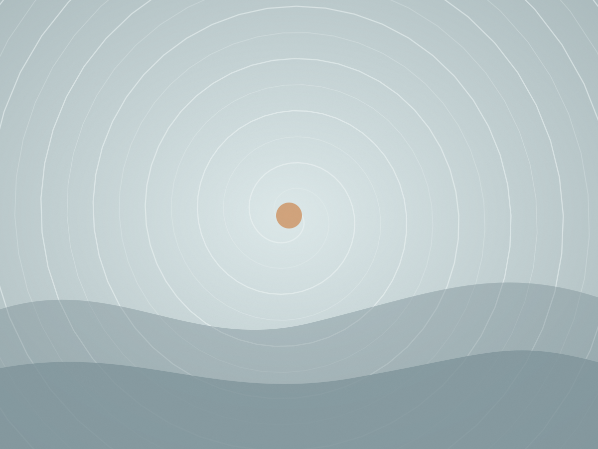
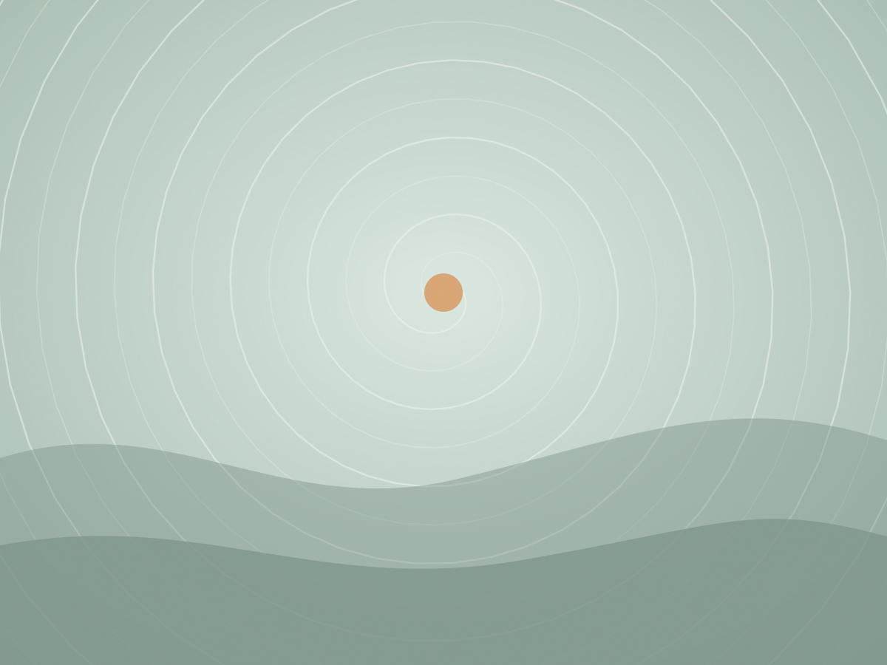
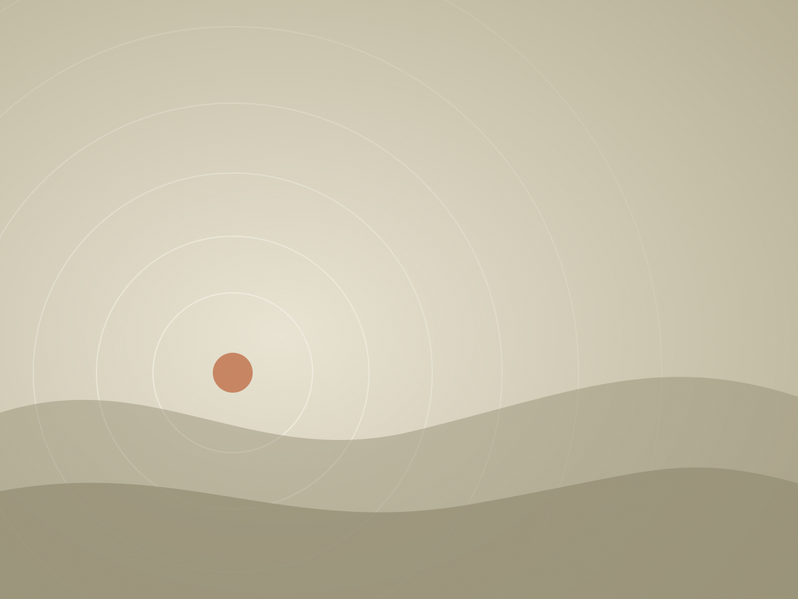
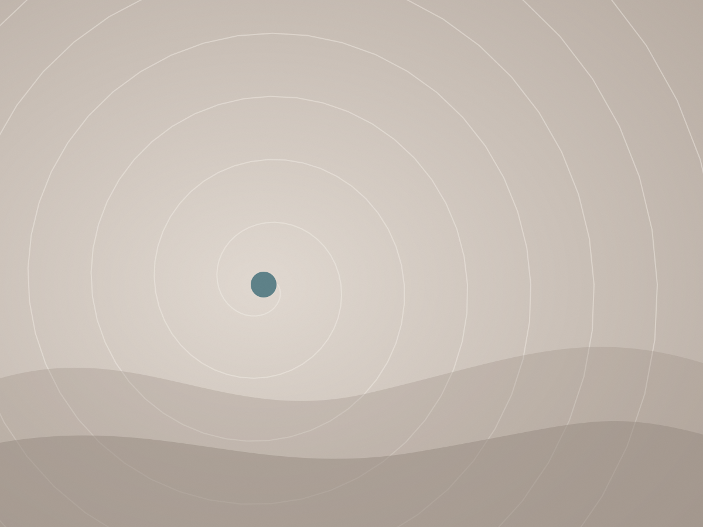

Natural movement,
in small doses
“Exercise is optional – movement is essential.”
A few minutes a day is enough to feel different in your body.
Micro movement: small doses of movement through the day
Most of us sit far more than our bodies were built for. The answer isn't necessarily another hour at the gym – it's many short moments of movement, at home, at work, on the way and outdoors.
I teach how to spread movement across the day: getting out of a chair differently, sitting on the floor, changing position, breathing through the nose, hanging, walking barefoot, carrying, climbing. Short movements with an immediate effect on energy and focus, and a long-term effect on strength, balance and general health.
We start by looking at what's already there – how you move today, what limits you, what hurts and what interests you – and build a realistic routine that stays with you afterwards.
- Functional movement
- Balance
- Strength and stamina
- Posture
- Fall prevention
- Breathing
- Flexibility and coordination
- Movement breaks
- Barefoot walking
- Moving outdoors
- Prolonged sitting
- Healthy habits

Who it's for
Individuals, couples and groups – at any age. With pain or without, with a movement background or none at all.
Children
Posture difficulties, motor delay, muscle weakness or attention difficulties. Overcoming obstacles and moving freely builds focus, motivation and confidence – usually together with the family.
Adults
For people “with or without pain” who feel the lack of movement in their lives and want to get unstuck, build strength and develop habits that last.
Older adults
Better movement efficiency, coordination and confidence in the body. Practice for balance and reaction speed to prevent falls, plus self-care exercises to do at home.
Women in menopause
A dedicated group and workshops: strength, balance and a supportive movement routine for a time when the body is changing – in good company, with no competition.
Sessions, workshops and talks
At the studio in Ein Hod and around it – a quiet, beautiful space in the heart of the Carmel – at your home or community, outdoors, and on Zoom.

A talk and practical session for older adults: balance
A meeting that explains, simply, why balance declines over the years, what raises the risk of a fall – and what you can do at home starting today. Half of it is hands-on practice: exercises seated, standing and with support, at everyone's own pace.
- For clubs, communities, senior residences and retiree organisations
- Suitable for people who have never trained
- About 60–90 minutes
- A single meeting or a series
Price: depends on group size and distance – get in touch.

Movement for women in menopause
A weekly movement group for women on Monday mornings, plus monthly in-depth workshops. We work on strength, balance, posture and breathing, and build a movement routine that continues at home – no competition and no mirrors.
- Training and play with a stick
- Nourishing movement breaks
- Arranging your home so it invites movement
- At the monthly workshop: a nourishing vegan meal
Monthly workshop: about three hours. Weekly group: per-session and membership prices – get in touch.

Private sessions, built around you
We start with an introductory session and a movement assessment: what works, what's stuck, what interests you. From there we build a personal plan – functional movement, balance, strength, posture, breathing and everyday movement habits. For children, some sessions include the family so the process continues at home.
- At the studio in Ein Hod and outdoors nearby
- At your home in the Hof HaCarmel area
- And on Zoom, from anywhere
- About 90 minutes per session

Workshops and talks for groups
A meeting that combines conversation and a movement experience: what happened to the idea of “movement” in modern life, and why it's worth using the body in varied, deliberate ways through the day. Participants experience natural movement and play, and leave with small, accessible changes for home and the workplace.
- In my garden in Ein Hod, or at your place
- 45 to 90 minutes
- Parents and toddlers · families · teams
- Teacher workshops: natural movement in learning
For schools I also offer support with a “month of movement” programme, advice on expanding the outdoor yard and creating safe options for barefoot walking, and a session for the whole teaching staff – across all subjects.
Price: depends on the type of meeting and group size – get in touch.

A personal retreat at the studio
A stay in a studio designed entirely for natural movement – no standard chairs, no furniture that invites you to sink – together with a private micro movement lesson. You leave with short movements and exercises you can spread through the day, with an immediate effect on energy and a long-term effect on health.
- A stay in a studio designed for movement
- A private micro movement lesson
- In the centre of Ein Hod, a minute from the Israel National Trail
- For individuals and couples
Price and booking details: get in touch.

Exercise is optional – movement is essentialVered Gutreich

From yoga on the mat to movement everywhere
As a child I didn't like sport and resisted movement of any kind – out of difficulty, pain, or fear of not succeeding. At 23 I discovered yoga, and in it I found a safe, pleasant place to move. I practised yoga for 21 years, devotedly.
In 2017 I stepped off the mat for the first time, into a course on posture, movement and motor therapy. There I found that yoga had done a great deal of good in my life – but I hadn't developed the basic ability to move with confidence: to run, jump, carry weight, catch a ball, hang. I had lived in nature for years and still barely walked barefoot and never climbed a single tree.
One day I stopped practising yoga – honestly, my body stopped – and started moving differently. Coming off autopilot, learning the things I'm not “good” at, playing more wherever I am, walking barefoot, and moving and connecting with my son. I went through a change: from an introverted person who mostly needed quiet, to someone who goes outside, adapts, gets over obstacles and dares far more.
Today I teach movement privately, give talks and workshops to groups, and help people adopt a healthy, moving way of life. Moving because I have an efficient, remarkable human body for a whole life – not only because it hurts.
Training: course in posture, movement and motor therapy (2017) · 21 years practising and teaching yoga
What people say afterwards
[Client quote – what it was like before, and what changed]
[Client quote – what it was like before, and what changed]
[Client quote – what it was like before, and what changed]
More movement, clips and moments from sessions – on Instagram
Three steps
- Send me a messageTell me in a few sentences who you are, what's bothering or interesting you, and what you'd like to change. WhatsApp, phone, or the form at the bottom of this page.
- A short phone callWe work out together what fits best – private sessions, a group, a workshop or a talk – and set a time and place.
- The first sessionAn introduction and movement assessment, ending with a few exercises and movement breaks you can start the same day.
A quiet, beautiful place to move in
Ein Hod is a small artists' village on the slopes of the Carmel, among woodland and stone with a view to the sea. Most of my sessions and workshops happen here – in the studio, in the garden and on the paths around it. The quiet, the air and the uneven ground are part of the lesson.
The studio sits in the centre of the village, a minute from the Israel National Trail – easy to reach from the area, and an invitation to a whole day of movement and fresh air.
Before you start
I'm not fit and haven't trained in years. Is this for me?
Yes. Most people who come to me are not from the world of sport. We start where you are today, at your pace, with movements you can do at home without equipment.
I have back, knee or shoulder pain. Can I still train?
I work with people “with or without pain” and adapt the movement to what the body allows. To be clear: this is movement training, not medical treatment. If you're under medical or physiotherapy care, let your practitioner know – I'm happy to work alongside them.
Where do sessions take place?
At the studio and garden in Ein Hod and outdoors nearby, at your home in the Hof HaCarmel area, and in communities and clubs when I'm invited to give a talk. Zoom is also an option.
Can I train on Zoom?
Yes. Private Zoom sessions are open to anyone far away or who prefers to train from home. Household objects replace equipment, and I guide and correct through the screen.
How many sessions do I need?
After the introduction and assessment I can say more precisely. Most people feel a change within the first few weeks, and build a routine with me that continues once we finish.
What should I bring?
Comfortable clothes you can move in and a bottle of water. We train barefoot or in flat shoes, whichever suits you.
Can we train as a couple or a family?
Absolutely, and it's encouraged – especially with children. Some sessions include the parents so movement becomes part of family life at home.
How do I pay, and what's the cancellation policy?
Payment details and the cancellation policy will be added here.
Let's find the movement that suits you
WhatsApp is the fastest way. You can also leave your details in the form – it opens the message in your own WhatsApp and I'll get back to you.
- WhatsAppFastest
- 054-476-0550
- vered.microdosing@gmail.com
- Ein Hod, Mount CarmelThe exact address is sent when we book
- Sun–Thu, 9:00–18:00Sessions by appointment